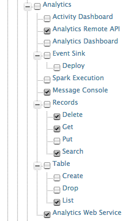

Data Explorer is the single-point of user interactions, which allows you to carry out different operations related to data analytics. Data Explorer allows you to search and view tables in the Data Access Layer (DAL) of WSO2 DAS, and browse their records. You can authorize and restrict users on the functions that they carry out using the Data Explorer, by setting permissions on the user roles assigned to them as shown below.
For instructions on setting the following permissions, see Adding and Managing Users and Roles.
Follow the steps below to view records of existing tables using the message console.
You can browse existing tables in the WSO2 DAS and search for records by filtering them based on a date range or by filtering them using a query as explained below
Follow the steps below to search for records of an existing table based on a particular date range.
Follow the steps below to search for records of an existing table using primary keys.
Follow the steps below to search for records of an existing table using an Apache Lucene query.